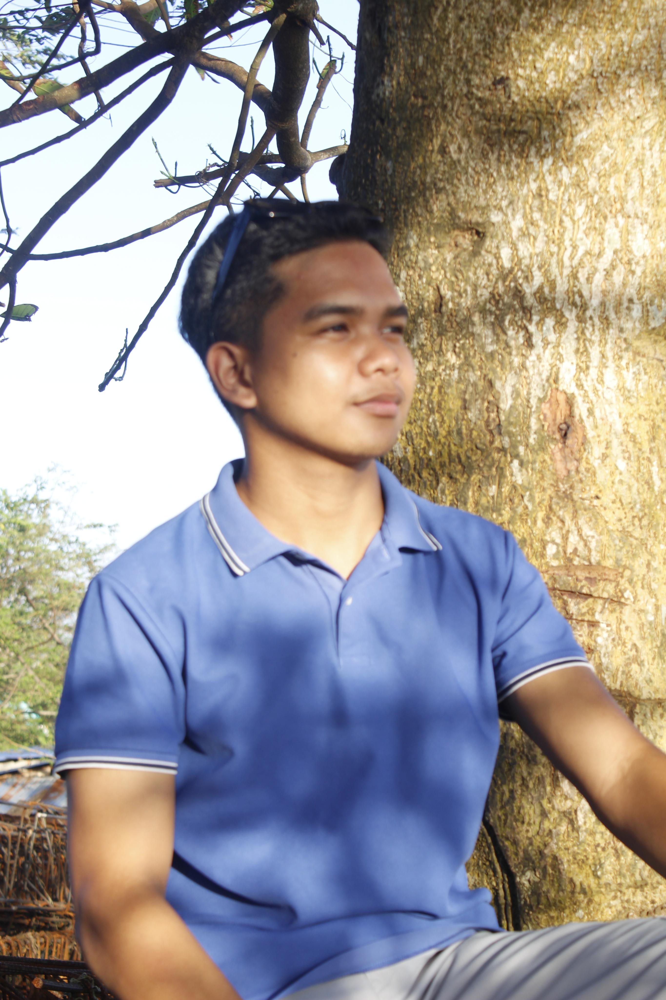

Student // Developer // Communicator
Enrolled in Computer Communication Development — bridging the gap between digital systems and human connection. Building networks, logic, and purpose from the heart of Bicol.
View Focus Areas
I love getting better at communication — presenting ideas, collaborating with people, and learning from each other's experiences and strategies along the way.
01Designing and building software systems with clean logic, efficient code, and human-centered outcomes.
02Navigating the responsibilities of a digital professional — privacy, access, and the social impact of technology.
03Santa Magdalena raised me. Sorsogon is my home, and I truly love living here. So when I study technology, it's personal. It's my way of bringing modern digital infrastructure and thinking to a region with deep roots and a powerful future.
Student projects, collaborations, or just a conversation about anything KAHIT LOVE LIFE MOPA YAN.
Send a Message